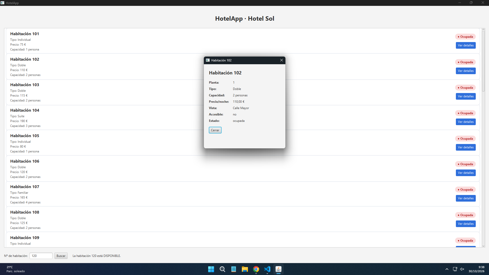

Lectura de habitaciones
La aplicación carga las habitaciones desde reservas.xml, con respaldo en src/xml/ si el recurso no está disponible.
Desarrollo de Interfaces · Hotel Sol, Madrid
Aplicación de JavaFX para consultar habitaciones y su disponibilidad. El proyecto parte de una búsqueda sobre datos XML y evoluciona con un componente visual propio para presentar cada habitación.

El taller, en dos partes
La aplicación carga las habitaciones desde reservas.xml, con respaldo en src/xml/ si el recurso no está disponible.
Comprueba si una habitación está disponible, ocupada o no existe. Las pruebas del taller incluyen los números 120, 101 y 200.
TarjetaHabitacion, un componente JavaFX basado en HBox, muestra tipo, precio, capacidad y estado con colores; las celdas mantienen una altura uniforme de 100 px.
Abre una ventana modal con planta, vista y accesibilidad. La búsqueda selecciona y resalta la habitación correspondiente.
Así funciona



Componente propio
TarjetaHabitacion recibe los datos mediante setHabitacion(h) y
comunica el clic en «Ver detalles» mediante setOnVerDetalles(...), sin
decidir qué hace el controlador; el callback recibe un Consumer<Habitacion>.
El listado usa celdas de altura uniforme y el
controlador abre una ventana modal con planta, tipo, capacidad, precio, vista,
accesibilidad y estado. Como retoque visual pendiente, los detalles pueden mejorar la
concordancia de «persona(s)» y mostrar el estado con mayúscula inicial.